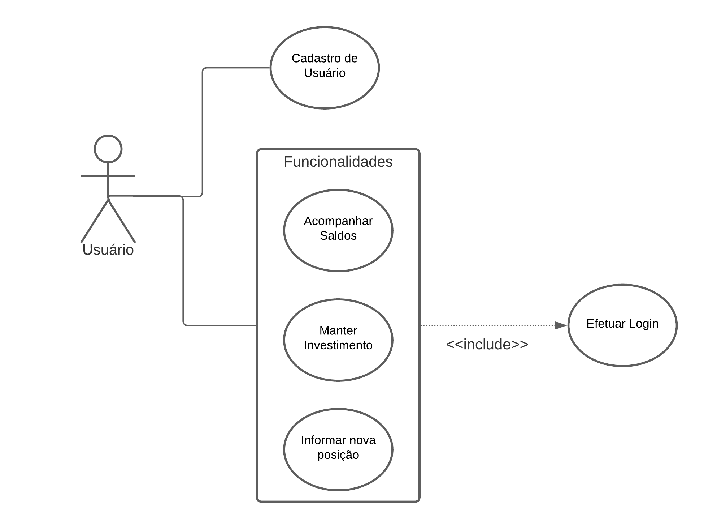
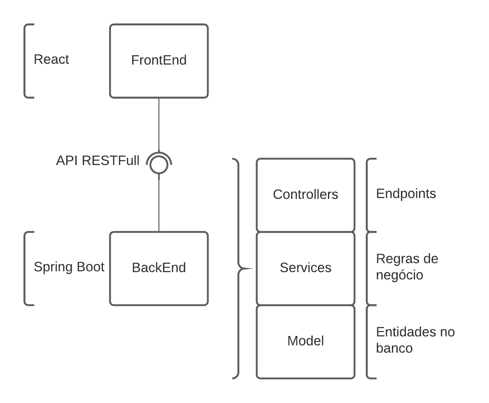
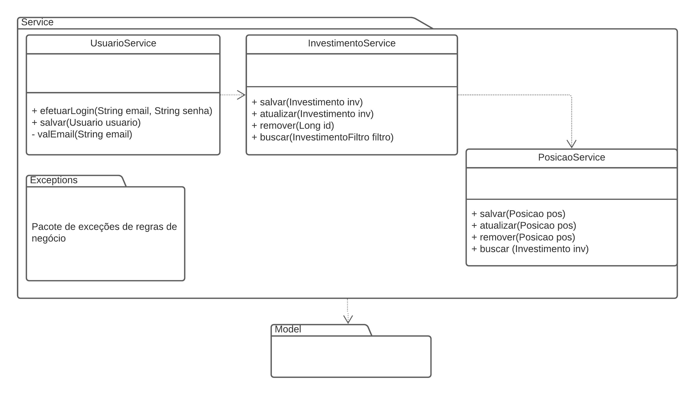
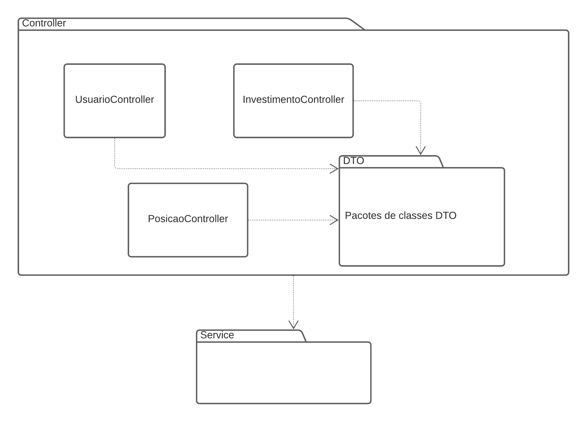
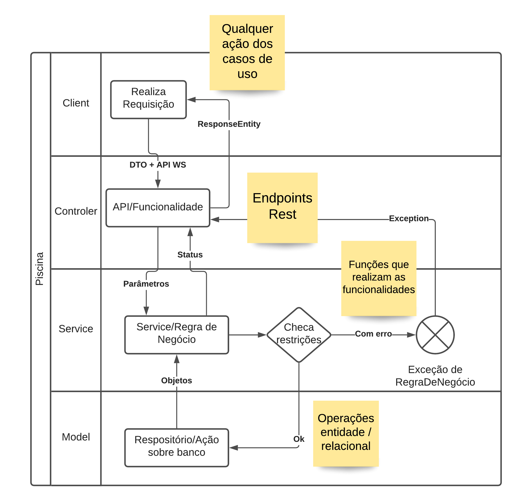

name: inverse class: center, middle, main-title # Projeto Base nas Aulas Laboratório de Programação --- # Ideia > Ter um mini projeto que será conduzido durante os exemplos em aula > E também aborde algo de modelagem para realização do projeto --- # Proposta - Gerenciador de Investimentos (Patrimônimo) - isso inclui contas, investimentos, imóveis ... > Permitir acompanhar mês a mês o aumento (ou não) do patrimônio do usuário --- # Funcionalidades esperadas: - Permitir que usuário possa se cadastrar para utilizar as funções do sistema - Permitir lançar novo investimento, e ainda editar seus dados - Impedir que um investimento seja apagado caso ele tenha algum saldo no histórico - Permitir que investimento seja alterado ao lançar uma nova posição histórica do mesmo (saldo) - Visualizar o histórico do lançamento --- # Visão de Casos de Uso <center>  </center> --- # Escolhas Arquiteturais - Camadas: - divisão de funcionalidades e responsabilidades - manutenção de código - facilidade de mudanças - Orientada a serviços - `backend` gera serviços - consumidos pelo `frontend` --- #Visão Arquitetural <center>  </center> --- #Visão de Classes <center> <img src="model.png" width="750"> </center> --- #Visão de Classes <center>  </center> --- #Visão de Classes <center>  </center> --- ##Visão `Genérica` Atividades <center>  </center>